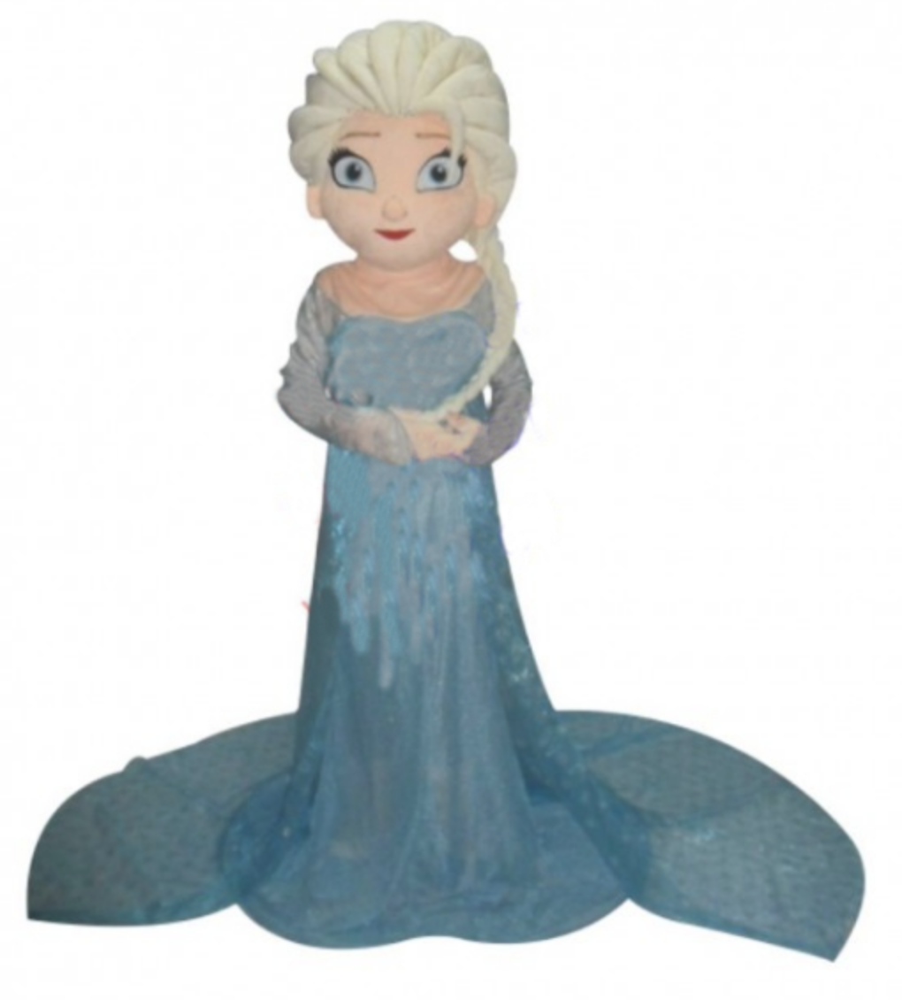
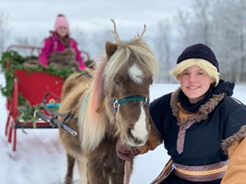
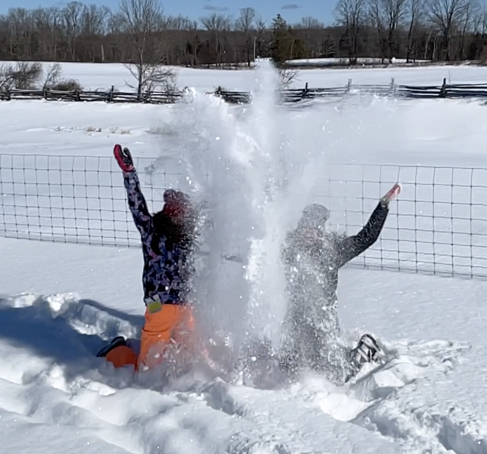
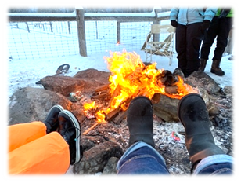
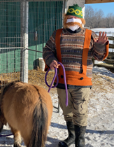
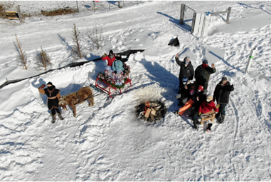

All about
Frozen too
Frozen too


Frozen Too Snow Adventures
Dress for the outdoors! Wear your best Frozen-Themed dress-up clothes, hats, mittens, coats and capes and enjoy your wintery journey. Snow pants, boots, mittens and hats from Canada are perfect to keep you warm as you wander from station to zone at Woolley Wonderland Farm.Queen Elsa is here this year!  A special trip from Arendelle has Elsa welcoming our Frozen Too guests as they begin their Snowy Farm Adventures. She’s always ready to pose for a royal photo with your whole group. Elsa may not talk, but her ability to cast a frozen spell should have snow at the farm all winter long. Kiddos who love the Frozen movies will treasure the time with the Queen.
Kristoff is at our farm leading his shaggy "reindeer/pony" for a wintery sleigh ride around our snowy field. This is one of the highlights of Frozen Too and why the trip to our farm is such a treat for all members of your family. Gramma will enjoy the gentle ride and mum & dad can share a moment of romance too.
Reserve your specific time with Online Booking for weekend adventures from Friday, December 27th to February 27. We are also open Chanukah, New Year's Eve, New Year's Day, Valentine's Day, Family Day.
 There is lots to see and do at Woolley Wonderland Farm in Lakehurst, Ontario. We are 40 Minutes North of Peterborough, 90 minutes from the top of Toronto, 10 minutes West of Buckhorn. You will get full directions upon booking with protocols for health and safety.
Reserve your specific time with Online Booking for weekend adventures from Friday, December 27th to February 27. We are also open Chanukah, New Year’s Eve, New Year’s Day, Valentine’s Day, Family Day.
Arrive and park by our porta-potty (for your freshening up convenience and hand sanitizing). You'll be greeted by our staff member who will verify your booking, review Covid screening questions and check for masks. (All guests over the age of 5 must wear a mask). We will get you oriented to our snow zones and lead your group to meet Queen Elsa right away.
Snow Zone with Olaf:
 From Ring Toss with Sven, spotting Bruni the Fire Spirit, and photogenic Olaf are in the snow zone. It's summer here all year round with Olaf on the snow beach! Give Olaf a warm hug or get silly for the camera in your own way. If the snow is just right... Do you want to build a snowman? or perhaps a snow chicken? We could have a complete snow farm by the time our visits are done each day. Can YOU build your own Olaf? There are shovels to dig with, Frozen flying disks to throw and catch and tunnels for kiddos to crawl through. This was a family favourite area last winter and guests couldn't get enough.Let's meet Kristoff.
 If your kiddos have a fancy-dress outfit or perhaps a special Frozen cloak, Olaf, Anna or Elsa costume - say "Hi!" to Kristoff and snap a photo in your Arendelle best. Your family will then take turns being escorted on a sleigh ride. Frozen tunes will play as you glide across the snowy field. Three little kiddos OR one adult plus a child, or two adults can fit in the sleigh for each trip. Continue to make family memories as you are led through the wintery tree-lined zone. Mix and match who is in the sleigh for each ride. Take lots of video and photos to share and remember your special time.Wandering Oaken's Trading Post & Sauna
 here is where he houses our miniature Critters including "reindeer/pony" meet and greet. Your kiddos can pet, brush and have their photos taken with our mini, shaggy equines. Delilah, Sampson, Bronwyn, Oreo and Meadow are our animal therapy buddies who will warm your heart. Oaken has other visiting farm friends at the trading post including a mini cows, donkeys, goats, ducks, chickens, sheep and alpacas for you to meet, pet and snap a selfie.Melting Time
houses our miniature Critters Purchase a delicious cup of hot chocolate for $3 ($2.66 plus HST) to enjoy as you warm your body parts by a bonfire. Enjoy some chat time with your family and sit to relax for your 20-minute last stop. Feel free to leave when you are done. Say "So-long!" to your Frozen Too Friends and wrap up your visit with final hand sanitizing and potty stop before getting ready for the ride home.Finally: Purchase a delicious cup of hot chocolate for $3 ($2.66 plus HST) to enjoy as you warm your body parts by a bonfire. Enjoy some chat time with your family and sit to relax for your 20-minute last stop. Feel free to leave when you are done. Say "So-long!" to your Frozen Too Friends and wrap up your visit with final hand sanitizing and potty stop before getting ready for the ride home.
Fees:
Admission for the Frozen Too Snowy Adventure is $16 per person (Infant in arms, unable to walk are free) or $75 for your group of up to ten people. You can book your hot chocolate in advance as well to save digging for coins on the day of your event. ($3 per cup includes HST) Spend 80 Minutes in the wintery outdoors with four snow zones (20 minutes per zone). Click Here for booking and look under EVENTS @ Woolley Wonderlandto booking and look under EVENTS @ Woolley Wonderland Be sure you select the correct date and time when booking online. There are no refunds or changes so please book carefully. You will get directions, protocols, and other information by email after you book. Watch your "junk mail". Please arrive at least 5 minutes early and wait by your vehicle. This is an any-weather, outdoor adventure Be sure you select the correct date and time when booking online.
 There are no refunds or changes so please book carefully. Arrive at least 5 minutes early. Wait by your vehicle.
This is an outdoor adventure. Please: Dress for the weather!
Copyright Critter Visits of Woolley Wonderland Farm Inc. 2020